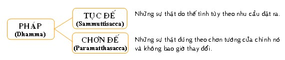

|
PHẬT GIÁO NGUYÊN THỦY THERAVÀDA VI DIỆU PHÁP BAN HOẰNG PHÁP |
|
BuddhaSasana Home Page |
Vietnamese, with Unicode VU Times or CN-Times font |
|
|
PHẬT GIÁO NGUYÊN THỦY THERAVÀDA VI DIỆU PHÁP BAN HOẰNG PHÁP |
|
Xin lưu ý: Cần có phông UnicodeViệt-Phạn VU Times hay CN-Times cài vào máy để đọc các chữ Pàli. |
|
BÀI 1 PHÁP Pháp là những gì có chơn tướng riêng biệt. Chữ Dhamma là một danh từ có một ý nghĩa hết sức bao quát được dùng theo nhiều nghĩa tùy theo trường hợp. Các nhà chú giải đã định nghĩa rằng: "Attano Lakkhanaṃ Dhāreti: Dhammo"= Tự giữ chơn tướng gọi là Pháp (nhậm trì tự tánh). Chữ Lakkhanaṃ có nghĩa là thể trạng, trạng thái, bản chất, chơn tướng. Như vậy, những gì có thể trạng đều gọi là pháp, dù thể trạng ấy là gì đi nửa cũng vậy. Thí dụ như vuông, tròn, dài, ngắn, tốt, xấu... Tóm lại, Pháp là danh từ chỉ vật gì có trạng thái riêng mà tri giác có thể nhận biết được, dù vật đó thuộc về vô vi hay hữu vi, giả danh hay bản thể, hiệp thế hay siêu thế. Ðại Ðức Santakicco đã định nghĩa về Pháp bằng hai câu sau: Pháp là chi ? – Chi cũng là Pháp. Pháp tuy có rất nhiều nhưng Ðức Phật đã gom lại và chia thành hai loại: - Pháp Tục Ðế (Sammuttisacca): Sự thật thế tình thông thường. - Pháp Chơn Ðế (Paramatthasacca): Sự thật bản thể, chơn tướng của các pháp.  Hai pháp Tục Ðế và Chơn Ðế bao hàm trọn vẹn tất cả các pháp trong thế gian. -ooOoo-
Ðầu trang |
Mục lục
| 01
| 02
| 03
| 04
| 05
| 06
| 07
| 08
| 09 |
Chân thành cám ơn Bác sĩ Nguyễn Tối Thiện đã gửi tặng bản vi tính (Bình Anson, 10-2002).
[Trở
về trang Thư Mục]
updated: 24-08-2003